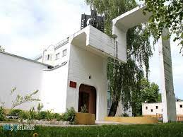

Добро пожаловать в Солигорск
История
Основан Солигорск был в 1958 г. Известно, что годы советской власти многие города создавались как центры промышленности или добычи полезных ископаемых.
Солигорск оказался в их числе. В деревнях, находящихся по близости, были открыты крупные запасы калийной соли. Они получили название Старобинское месторождение.

Впервые залежи были обнаружены в районе современного Солигорска в 1949 г. работниками бригады А. И. Нестерова. Недалеко от месторождения в 1953 г. было принято решение о строительстве комбината калийных солей. Тогда же решили возвести и новый город. Первый камень будущего города шахтёров был заложен в ходе митинга, проходившего 10 августа 1958 г. Назывался он тогда Ново-Старобинском. А Солигорском стал 8 августа 1959 г. Должность первого председателя нового города занял М. А. Герасимович.
Национальный состав жителей Солигорска по переписи 2009 года
| Национальность | Кол-во чел. | % |
|---|---|---|
| Белорусы | 88 811 | 86,82% |
| Русские | 8 439 | 8,25% |
| Украинцы | 1 141 | 1,12% |
| Поляки | 185 | 0,18% |
| Татары | 60 | 0,06% |
| Армяне | 52 | 0,05% |
| Азербайджанцы | 36 | 0,04% |
| Евреи | 34 | 0,03% |
| Немцы | 30 | 0,03% |
| Литовцы | 20 | 0,02% |
| Молдаване | 20 | 0,02% |
| Казахи | 10 | 0,01% |
| Чуваши | 10 | 0,01% |
| Удмурты | 10 | 0,01% | Всего | 98 858 |
Образование
В Солигорском районе создана необходимая инфраструктура учреждений образования и воспитания, которая обеспечена необходимыми квалифицированными кадрами.
Сеть учреждений образования Солигорского района одна из самых крупных в Минской области: 45 учреждений дошкольного образования, 29 учреждений общего среднего образования (в том числе 3 гимназии); 4 учреждения дополнительного образования детей и молодежи; государственное учреждение образования “Солигорский районный центр коррекционно-развивающего обучения и реабилитации”, государственное учреждение образования “Социально-педагогический центр Солигорского района”.
Эффективности образовательного процесса способствуют различные формы обучения на уровне общего среднего образования:
- гимназическое образование (1437учащийся V – XI классов;);допрофильная подготовка (охват 64,9% 71,3% учащихся VIII – IX классов); профильное обучение учащихся X и XI классов (959 учащихся – 69,7%); специальное образование (охват детей с особенностями психофизического развития (1805 детей(100%); Продолжена работа
- 9 профильных педагогических групп, открыта 1 группа правовой направленности;
- 3 профильных групп аграрной направленности.
- Профессиональная подготовка учащихся X классов, изучающих все учебные предметы на базовом уровне, в рамках изучения учебного предмета «Трудовое обучение» осуществляется по 12 профессиям рабочих и служащих, в том числе на базе Солигорского государственного колледжа.
- С целью ориентации учащихся на получение востребованных в районе специальностей организована профессиональная подготовка учащихся Xи XI классов, изучающих все учебные предметы на базовом уровне, в рамках изучения учебного предмета «Трудовое обучение» по 12 профессиям рабочих и служащих, в том числе на базе Солигорского государственного колледжа.
- На базе вечерних классов Старобинской средней школы продолжена организация профессионального образования по специальности: «Тракторист-машинист сельскохозяйственного производства», «Водитель механических транспортных средств категории «В» и «С».
Культура
Культурно-просветительную, театрально-зрелищную, гастрольно-концертную, научно-исследовательскую деятельность, а также подготовку кадров культуры и искусства осуществляют 61 учреждение: ГУК «Солигорская районная центральная библиотека» и 25 библиотек-филиалов, ГУО «Солигорская детская школа искусств», ГУО «Старобинская детская школа искусств», ГУО «Краснослободская детская школа искусств», ГУО «Солигорская детская музыкальная школа искусств», ГУО «Солигорская детская художественная школа искусств», ГУК «Солигорский краеведческий музей», ГУ «Дворец культуры г.Солигорска», ГУК «Культурно-досуговый центр Солигорского района» и 27 филиалов.
·Музейная деятельность
- ГУК «Солигорский краеведческий музей» 
- ГУ «Дворец культуры г. Солигорска»
Клубная деятельность ГУК «Культурно-досуговый центр Солигорского района»
Вернуться назад
Достопримечательности
Городской сквер «Молодость» расположен по улицам Л. Комсомола и Железнодорожной, рядом с городским ж/д и автовокзалом. Парк пользуется популярностью в связи с тем, что здесь находится Комплекс «Первый камень Солигорска» – одна из ключевых точек экскурсий по Солигорску и Солигорскому району. Здесь часто назначают сбор туристических групп.
Парк четырёх стихий. После реконструкции его аллеи стали одной из основных достопримечательностей города. Растянувшись более чем на 18 га, парк завоевал статус любимого места не только солигорчан, но и туристов, приехавших на отдых в Беларусь. Название парка отсылает к основной идее его создателя. Стихии, представленные разными архитектурными воплощениями, призваны символизировать единство природы и красоту всех ее состояний.

Мемориал «Чёрный Тюльпан». Автор мемориала В. Ломейко, архитектор – И. Долматович. Год открытия – 2003. Пространство мемориала представляет собой «площадку войны», разбитую на месяцы и годы войны в Афганистане (1979 – 1989). Даты отлиты на бордюрах каждого ряда. В углу площадки установлена памятная стела с текстом и символом войны в виде взорванной скалы с черным тюльпаном в центре. От взрыва, разлетевшись по площадке войны, располагаются «осколки» - памятные камни в честь каждого погибшего воина с именной табличкой в центре. Причем каждый камень установлен строго на пересечении года и месяца гибели солдата. Памятник изображает картину войны, опалившей наших земляков.
Храм Рождества Богородицы Христо-Рождественского собора в г. Солигорске. В Солигорске до 2000 года не было ни одного храма. Православный приход был здесь зарегистрирован в 1994 году. Крестильную церковь в честь Рождества Пресвятой Богородицы построили в 2000 году. В 2008 году после обращения прихожан и духовенства Солигорского благочиния было принято решение о продолжении строительства храма. Только в 2019 году Рождественский собор приобрел свой нынешний вид. И сейчас Солигорский собор – самый большой православный храм Минской области и юга Беларуси. В храме хранятся многочисленные святыни: фрагменты мощей святых, копии икон и гробница праведной Софии Слуцкой.
Солигорские терриконы – необычная рукотворная достопримечательность Беларуси. Открывающиеся пейзажи напоминают поверхность Марса: красно-бурые горы со слоями белой соли стоят на растрескавшейся пустынной земле. Соляные горы являются отходами деятельности ОАО «Беларуськалий» – градообразующего предприятия в Солигорске, производящего калийные минеральные удобрения. Солигорские терриконы представляют собой глину вперемешку с каменной солью и гипсом. Солеотвалы занимают площадь в 10 км² и имеют высоту 120-160 метров. И их размеры продолжают увеличиваться! Вокруг терриконов можно увидеть небольшие водоемы с водой ярко-зеленого и голубого цвета. Эти пруды дополняют сюрреалистическую картину. На самом деле их наполняет обычная техническая вода, а волшебный цвет ей придают растворившиеся минералы. Все водоемы являются рукотворными, они построены для хранения шлама – концентрированного соляного раствора, остающегося на фабрике после добычи соли. Дно водоемов застелено пленкой, а вода поступает по трубопроводам.
Вернуться назад
Спорт
В Солигорском районе подготовку спортивного резерва осуществляют 7 специализированных учебно-спортивных учреждений по 12 видам спорта с количеством занимающихся – 2295 спортсменов-учащихся (баскетбол, волейбол, гандбол, футбол, хоккей с шайбой, плавание, бокс, таэквондо, художественная гимнастика, легкая атлетика, тяжёлая атлетика, вольная борьба):
- - ГУ «СДЮШОР № 1 г. Солигорска»
- - ГУ «СДЮШОР Солигорского района»
- - У «СДЮШОР ППО ОАО «Беларуськалий»
- - ГУ «ДЮСШ по плаванию г. Солигорска» (solswim.schools.by)
- - ГУ «ДЮСШ «ФК Шахтер» (www.fcshakhter.by)
- - ГУ «ДЮСШ «ХК Шахтер-Солигорск» (www.hcshahter.by)
- - ГУ «Солигорская районная ДЮСШ по игровым видам спорта «Шахтер»
Солигорск в официальных республиканских и международных клубных соревнованиях по игровым видам спорта представляют 3 клуба: Хоккейный клуб «Шахтер» (www.hcshahter.by)
- - Чемпион Беларуси 2015
- - Серебряный призёр чемпионата Беларуси 2010,2016,2020
- - Бронзовый призёр чемпионата Беларуси 2013,2018,2019
- - Победитель регулярного сезона 2014/15
- - Обладатель Кубка Открытия 2015/16
- - Обладатель Кубка мэра 2014 (Брест)
- - Победитель Мемориала Павла Забойника 2016 (Зволен, Словакия)
Футбольный клуб «Шахтер» (www.fcshakhter.by)
- - Чемпион Беларуси 2005,2020
- - Серебряный призёр чемпионата Беларуси 2010,2011,2012,2013,2016,2018
- - Бронзовый призёр чемпионата Беларуси 2002,2004,2006,2007,2014,2015, 2017,2019
- - Победитель Кубка Беларуси 2003/2004,2013/2014,2018/2019
- - Финалист Кубка Беларуси 2005/2006,2007/2008,2008/2009,2014/2015, 2016/2017
- - Финалист Суперкубка Беларуси 2015,2016,2020
Волейбольный клуб «Шахтёр» (www.shahter-vc.by)
- - Чемпион Беларуси 2017,2018,2019
- - Серебряный призёр чемпионата Беларуси 2006,2013,2014
- - Бронзовый призёр чемпионата Беларуси 2004,2005,2015,2016
- - Обладатель Кубка Беларуси 2018,2019
- - Финалист Кубка Беларуси 2017
- - Бронзовый призёр Кубка Беларуси 2012,2013,2016
- - Обладатель Суперкубка Беларуси 2018,2019
- - Финалист Суперкубка Беларуси 2017
Спортивную, физкультурно-оздоровительную и спортивно-массовую работу в районе обеспечивают:
- - 2 стадиона («Строитель» ГУ «СДЮШОР № 1 г. Солигорска», СК «Шахтер» ОАО «Беларуськалий»),
- - 1 ледовая арена (Спортивно-зрелищный комплекс),
- - 13 плавательных бассейнов, в т.ч. 8 мини-бассейнов,
- - 50 спортивных залов,
- - 60 открытых плоскостных сооружений,
- - 15 спортивных ядер,
- - легкоатлетический манеж (СК «Шахтер» ОАО «Беларуськалий»),
- - лыжная база (ГУДО «Центр туризма и краеведения детей и молодежи Солигорского района»),
- - 47 приспособленных помещений для занятий физической культурой и спортом,
- - роллер-трек,
- - лыжероллерная трасса,
- - теннисный манеж (СК «Шахтер» ОАО «Беларуськалий»).